empleado tesoreria
Vender es la operación más rápida del sistema y la que más cosas dispara. Un ticket de mostrador mueve inventario, caja, contabilidad, impuestos y —si es a crédito— la cartera del cliente, todo en la misma transacción.
Ventas → Abrir caja, o directamente la dirección /pos. El punto
de venta se abre fuera del área de trabajo: ocupa la pantalla entera porque quien
cobra no navega por menús.
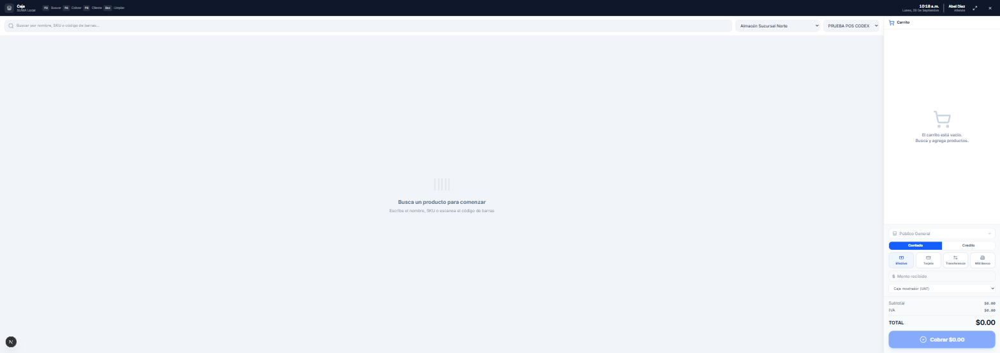
Un turno de caja abierto. Si no hay turno, el punto de venta pide abrirlo primero: cada venta, cobro, reembolso, entrada y retiro de efectivo queda ligado al turno, y sin turno no hay a qué ligarlo. El turno se abre en Tesorería → Caja, corte y arqueo.
• Descuenta la existencia del almacén y la ubicación.
• Registra el movimiento de caja en el turno abierto.
• Genera la póliza: ingreso, IVA trasladado y costo de venta contra
inventario.
• Si es a crédito, reserva la línea del cliente y crea el crédito con su
calendario de cuotas.
• Deja el ticket listo para imprimir y, si el cliente lo pide, para
facturar.
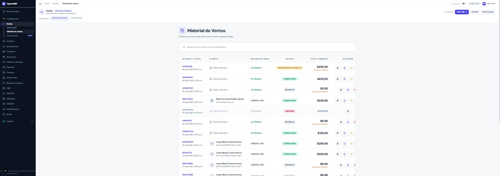
| Anular | Devolver | |
|---|---|---|
| Cuándo | La venta estuvo mal desde el principio: se capturó dos veces, se cobró al cliente equivocado. | El cliente trae la mercancía de vuelta. |
| Mercancía | Vuelve entera al almacén. | Vuelve lo que trajo; puede ser parcial. |
| Dinero | Se deshace el cobro. | Reembolso, saldo a favor o ajuste a cuentas por cobrar. |
| Rastro | La venta queda ANULADA, no se borra. | Nace un documento DEV-n enlazado a la venta. |
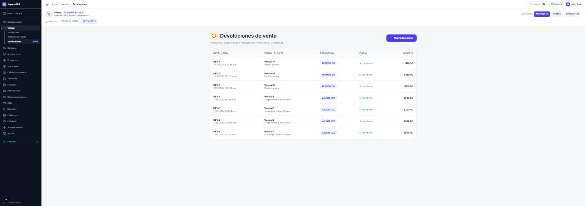
La resolución la decide el sistema según cómo se pagó la venta: lo que se pagó en efectivo se reembolsa; lo que se vendió a crédito se ajusta contra la cuenta por cobrar. Devolver efectivo de una venta a crédito sería regalar dinero.
Si se hizo mal, lo correcto es una nueva venta por lo devuelto, no borrar el reembolso. Y su movimiento de tesorería tampoco se cancela desde Tesorería: el sistema lo niega y explica por qué (capítulo 7).
Cuatro cosas, y si falta una no se factura: (1) datos fiscales completos de la empresa, (2) ClaveProdServ y ClaveUnidad en cada producto, (3) el impuesto del producto y (4) el RFC y régimen fiscal del cliente. Las pantallas Finanzas → Clasificación SAT e Impuestos del catálogo listan a quién le falta.
Abre turno de caja. Haz una venta de contado de dos productos y otra a crédito a un cliente con línea. Devuelve parcialmente la primera. Después comprueba en: Almacenes → Existencias que bajó lo vendido y subió lo devuelto; Tesorería → Caja que están los dos movimientos; Finanzas → Libro diario las pólizas; y Crédito → Créditos el crédito nuevo con sus cuotas.
credito cobranza gerencia direccion
Este módulo lleva el crédito comercial: vender hoy y cobrar después. En el modo «sólo ERP» es la funcionalidad completa; en el modo con core, el ERP sigue decidiendo y el core lleva el registro (Parte III).
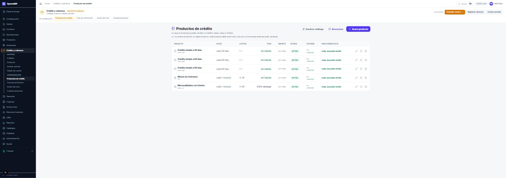
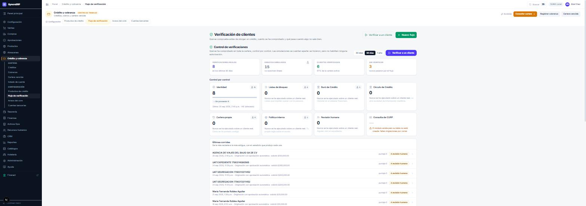
Cada control se puede exigir o no. Los que dependen de un proveedor externo —buró, círculo, listas— quedan en cero hasta que ese proveedor esté conectado, y el sistema lo dice con esas palabras en vez de dar por buena una comprobación que no hizo.
Aprobaciones → Bandeja. Cada solicitud muestra el cliente, el importe pedido, el plazo y el nivel de riesgo. Y un recuadro que hay que leer antes de firmar:
| Recuadro | ¿El botón funciona? | Qué significa |
|---|---|---|
| Rojo | No, está apagado | Hay algo que impide autorizar: no hay expediente de validación, el expediente quedó RECHAZADO, o el importe validado es menor que el que se está autorizando. El recuadro dice cuál de los tres y trae el enlace para verificar al cliente; al volver, el botón se enciende solo. |
| Ámbar | Sí | Ahí está lo delicado: el expediente no concluyó —por ejemplo porque no hay proveedor de identidad conectado— y el recuadro lista los motivos. El sistema deja la decisión en tus manos a propósito, porque «revisión manual» quiere decir que la mire una persona, y esa persona eres tú. Termina con la frase que importa: «Nadie más va a revisarlo: si firmas, la línea se autoriza con esto.» |
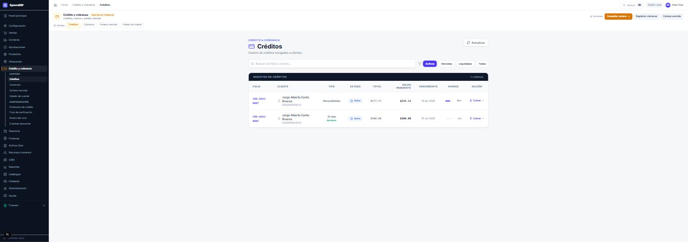
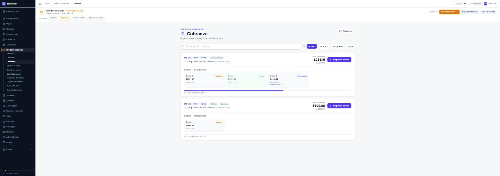
Un abono reparte por antigüedad —primero la cuota más vieja—, actualiza el saldo del crédito, libera línea disponible del cliente, registra el ingreso en tesorería y genera la póliza de cobranza. Cancelar un pago de cobranza deshace el reparto y su movimiento de tesorería, en ese orden.
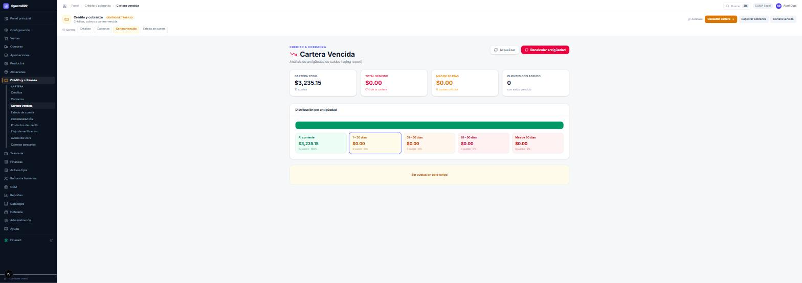
Solicita una línea para un cliente, verifícalo, y autorízala con dos usuarios distintos para ver la secuencia de firmas. Haz una venta a crédito con esa línea. Registra un abono parcial y comprueba en la pantalla de cobranza cómo se repartió y cuánto disponible se le liberó al cliente.
tesoreria
Tesorería es donde vive el dinero: la caja del mostrador y las cuentas bancarias. La idea que organiza el módulo entero es la diferencia entre efectivo del turno y saldo del banco.
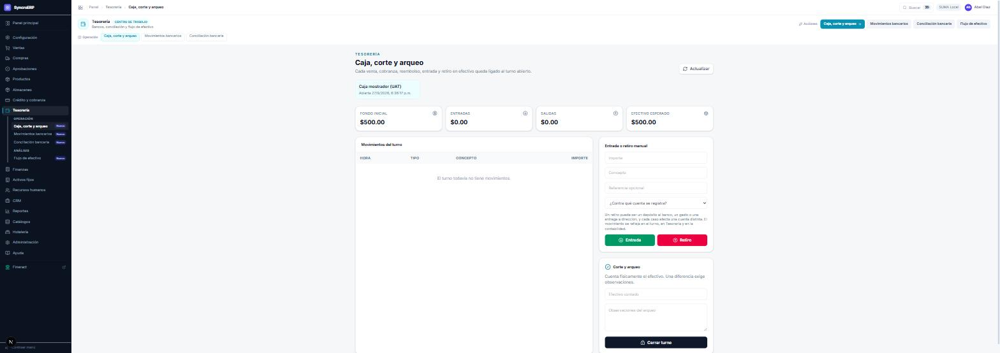
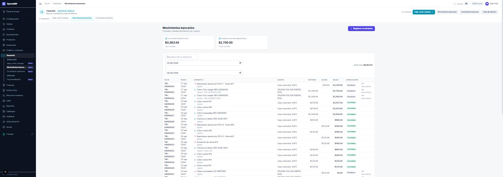
Mira la última columna de la lista. Cada renglón es una de dos cosas:
| Lo que ves | Qué significa |
|---|---|
| El botón «Cancelar» | El movimiento se capturó a mano. Se puede cancelar aquí. |
| La leyenda «del documento» | Lo generó una venta, un pago, un cobro, la nómina, un folio de hotel… Se deshace desde ese documento, no desde aquí. |
Por qué. Cancelar aquí devuelve el saldo al banco y no toca el documento: la orden de compra seguiría diciendo que está pagada. Dos subsistemas afirmando cosas contrarias, cada uno coherente por dentro, y ninguna pantalla donde se vea la diferencia — aparece meses después, en una conciliación, cuando ya nadie recuerda qué pasó.
Si se intenta de todas formas, el sistema dice qué documento lo generó y dónde se deshace. Y donde el ERP todavía no tiene esa pantalla —hoy, el pago a proveedor y el traspaso entre cuentas— lo dice así, en vez de mandar a buscar algo que no está.
Un traspaso escribe dos movimientos —salida en la cuenta de origen, entrada en la de destino— y una sola póliza con los dos lados. Por eso ninguna de las dos piernas se cancela por separado: hacerlo dejaría la otra en pie y el mismo importe duplicado o desaparecido. Si un traspaso salió mal, se registra el traspaso contrario con su explicación.
Es lo que desbloquea el cierre mensual del contador, así que conviene hacerla pronto.
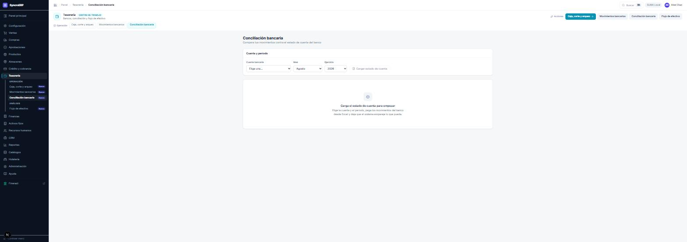
dd/mm/aaaa y
aaaa-mm-dd, e ignora símbolos de moneda y comas.
Tesorería → Flujo de efectivo. La proyección: lo que va a entrar por cobrar y lo que va a salir por pagar, en el horizonte que se elija. Los traspasos entre cuentas propias se excluyen — mover dinero de un bolsillo a otro no es flujo.
Abre un turno con $500 de fondo, haz una venta en efectivo, registra un retiro por depósito al banco y cierra el turno contando $10 de menos a propósito. Escribe la observación. Después entra a Movimientos bancarios y localiza dos renglones: el de tu retiro —que sí tiene botón de cancelar— y el de la venta —que dice «del documento»—.
contador finanzas
La contabilidad del ERP no se captura: se genera. Cada documento de los capítulos anteriores escribe su póliza. La póliza manual existe para lo que no tiene módulo —la renta, la luz, una reclasificación— y es la excepción, no la regla.
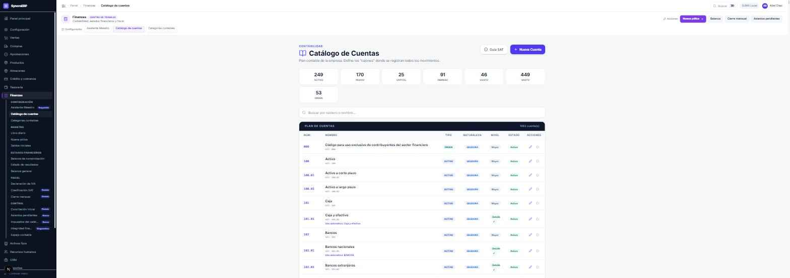
Fíjate en la etiqueta «Uso automático» de algunas cuentas: son las que el sistema usa por su cuenta —caja y efectivo, bancos, clientes, proveedores, inventario—. Cambiarlas de sitio rompe la generación automática de pólizas.
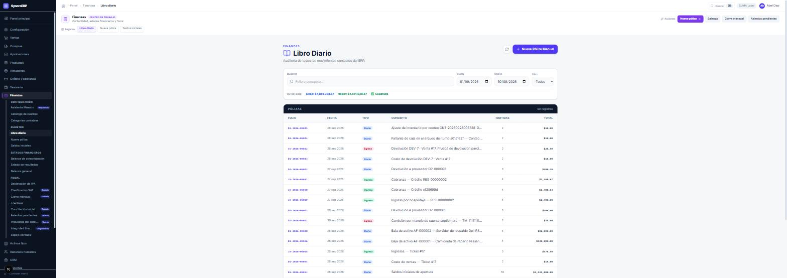
Lee los conceptos de esa lista: «Ajuste de inventario por conteo», «Costo de devolución», «Cobranza — Crédito», «Ingreso por hospedaje», «Baja de activo». Cada uno viene de un documento de otro módulo. Eso es lo que significa que la contabilidad se genere.
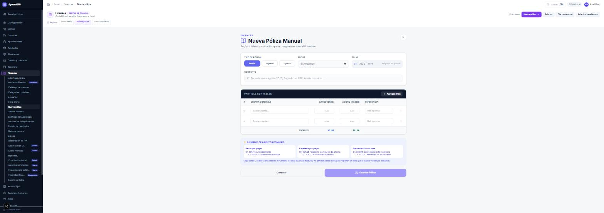
| Campo | Regla |
|---|---|
| Tipo | Diario, Ingreso o Egreso. |
| Fecha | No se aceptan fechas futuras. La contabilidad registra lo que ya ocurrió. |
| Concepto | Qué fue, en palabras. Es lo que alguien leerá dentro de un año. |
| Partidas | Al menos dos. Cargos y abonos hasta que diga Cuadrada. |
Bancos, clientes, proveedores e inventario los lleva un auxiliar. Si eliges una de ésas, el sistema lo explica y te manda al módulo correcto. No es un capricho: una póliza manual contra bancos deja el mayor y el auxiliar diciendo cosas distintas, y a partir de ahí la conciliación no cuadra nunca.
No se borra ni se edita: se emite su reversa. El sistema invierte cargos y abonos y deja las dos en el libro con referencia cruzada. Si el período original está cerrado —o la póliza estaba fechada adelante— la reversa se fecha hoy, que es cuando de verdad se está cancelando.
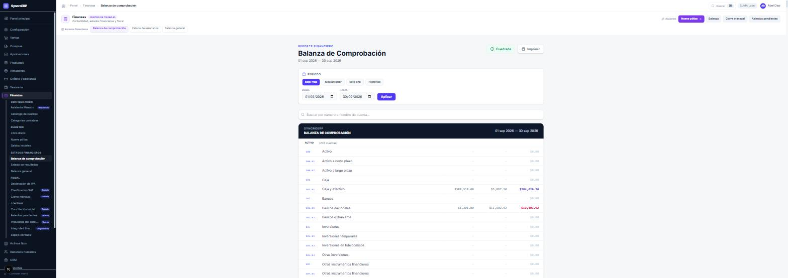
Y el Balance general, con la misma lógica.
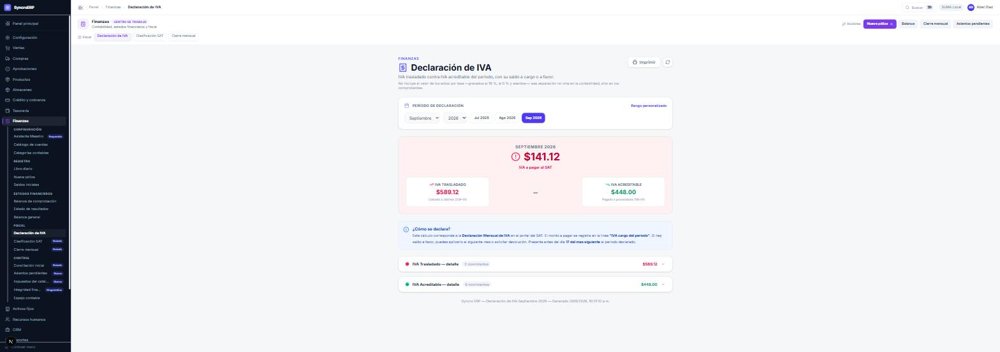
Es una estimación contable: se revisa contra los CFDI y las declaraciones antes de presentarla. No incluye el IVA de los actos por tasa —gravados al 16 %, al 0 % y exentos— porque esa separación no vive en la contabilidad sino en los comprobantes.
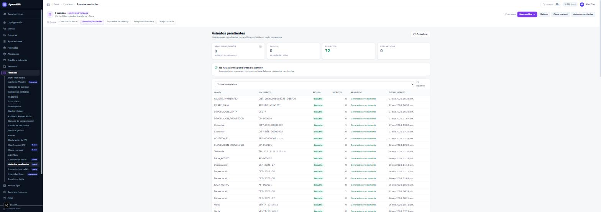
Ésta es la pantalla que hay que mirar todas las semanas. Un asiento pendiente significa que una operación ocurrió y la contabilidad no se enteró. El motivo más frecuente, con diferencia, es un producto sin categoría o una categoría sin cuentas.
El botón Reintentar ahora vuelve a intentarlo. Y si el asiento ya se generó pero el documento se quedó atrás —diciendo «pendiente» aunque su póliza exista— el mismo botón repara el documento.
Cerrar un mes es afirmar que los números de ese mes son los definitivos. Después del cierre no se pueden registrar ni modificar pólizas de ese periodo.
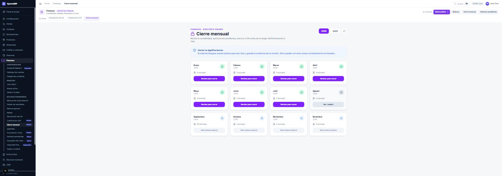
| Control | Qué comprueba | ¿Bloquea? |
|---|---|---|
| Todos los controles pudieron medirse | Que ninguna consulta del diagnóstico falló | sí |
| El mes tiene registros contables | Que no cierres un mes vacío por accidente | sí |
| Debe y Haber coinciden | Que la balanza cuadre | sí |
| Pólizas completas y cuadradas | Que ninguna esté a medias | sí |
| No hay operaciones esperando póliza | Que nada del mes quedara sin contabilizar | sí |
| Todos los módulos llegaron al libro mayor | Que ningún módulo se quedara fuera | sí |
| Conciliación bancaria del mes | Que cada cuenta activa tenga conciliación cerrada | configurable |
| Las pólizas llegaron al mayor externo | Que la bandeja de salida no tenga nada sin entregar | sí (sólo en modo espejo) |
| Existe una conciliación de referencia | Que haya una revisión inicial confirmada | no, avisa |
Si aparece, no lo ignores. Significa que una consulta del diagnóstico falló y que los demás verdes no son de fiar: lo que no se pudo medir es un bloqueo con nombre, no un aprobado. El motivo está en el log del servidor.
Y un campo de notas: escribe qué revisaste. Queda en la evidencia del cierre y es lo que alguien leerá dentro de un año cuando pregunte por qué ese mes quedó así.
El respaldo no se firma. Lo toma el sistema al cerrar, comprueba que el archivo esté completo y guarda su huella. Si el respaldo falla, el mes no se cierra.
Al confirmar, el sistema hace cuatro cosas en este orden:
Elige un mes terminado y pulsa «Revisar para cerrar» sin cerrarlo. Anota qué controles salen en rojo y por qué. Si sale rojo el de conciliación bancaria, ve al capítulo 7, carga el estado de cuenta de ese mes —o márcalo como mes sin movimientos— ciérralo, y vuelve a pulsar «Volver a calcular». Ese ciclo es el cierre mensual entero.